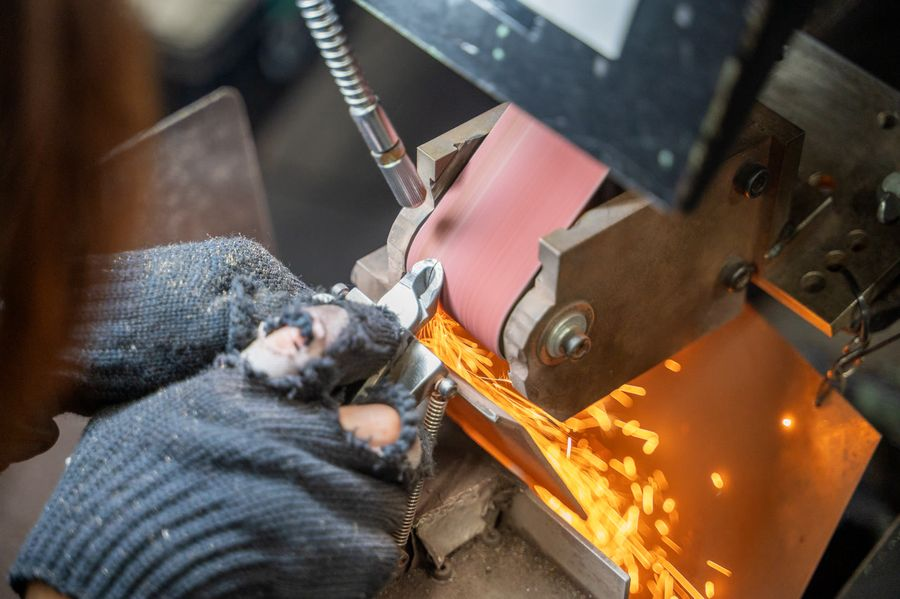
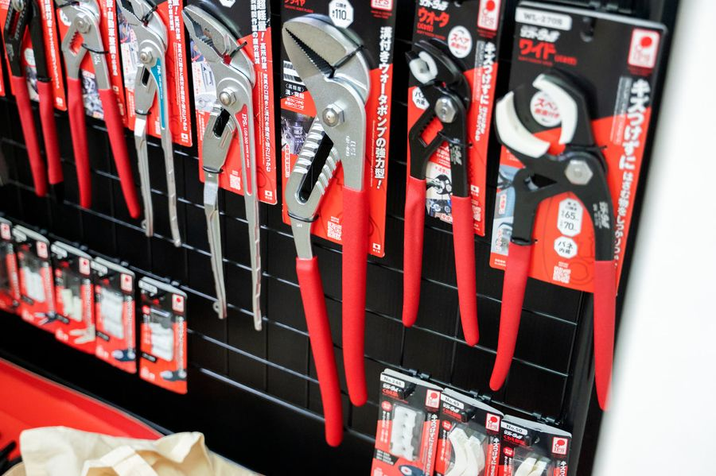

ZONES


6つのコーナーで巡る
THE TSUBAMESANJO

「見たことある」燕三条の定番製品を、実際に触れて購入できるメインコーナー。まずはここから。
出展：諏訪田製作所／山谷産業／タケダ／燕物産
FACTORY LIMITED

工場限定品・試作品・少量流通品など、市場にほとんど出回らない製品を工場直販で。
出展：IPS／テーエム／アイマーク／アルチザン／水野製作所／丸山製作所／プログラフ／熊倉シャーリング／大倉製作所／いすゞ製作所／サクライ／ツボエ
STOCK MARKET
デッドストックや規格外品を扱う掘り出し物コーナー。一期一会の出会いと価格が楽しめます。
出展：旭金属工業／有本製作所
MEIHIN-TEN燕三条 名品展
高級包丁や銅器などの逸品を、ギャラリーのように展示。工芸としての燕三条を鑑賞できます。
出展：後藤鉄工所／フチオカ／下村工業／須佐真（金工作家）
ふるさと納税PR
ふるさと納税PR
燕三条エリアの自治体による地域の魅力とふるさと納税のPRコーナー。
三条市ふるさと納税
技術展示
技術展示・商談
プレス・溶接・研磨など、こうばの技術そのものを展示。製造依頼や商談の相談はこちらから。
出展：後藤鉄工所
FLOOR MAP
FACTORY LIMITED（入口側の通路沿い）
THE TSUBAMESANJO（メインエリア）
名品展
STOCK MARKET
ふるさと納税PR
技術展示・商談ゾーン
※ 実際の配置図をもとにした簡易図です。出展社の配置は変更となる場合があります。最新情報は会場内の表示でご確認ください。